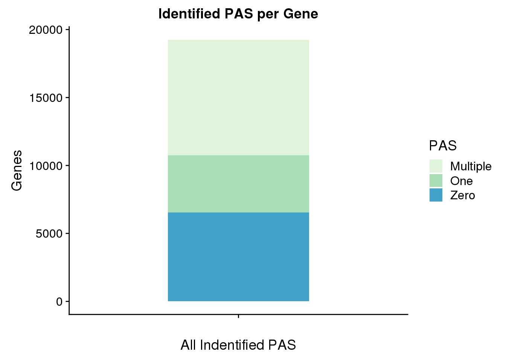
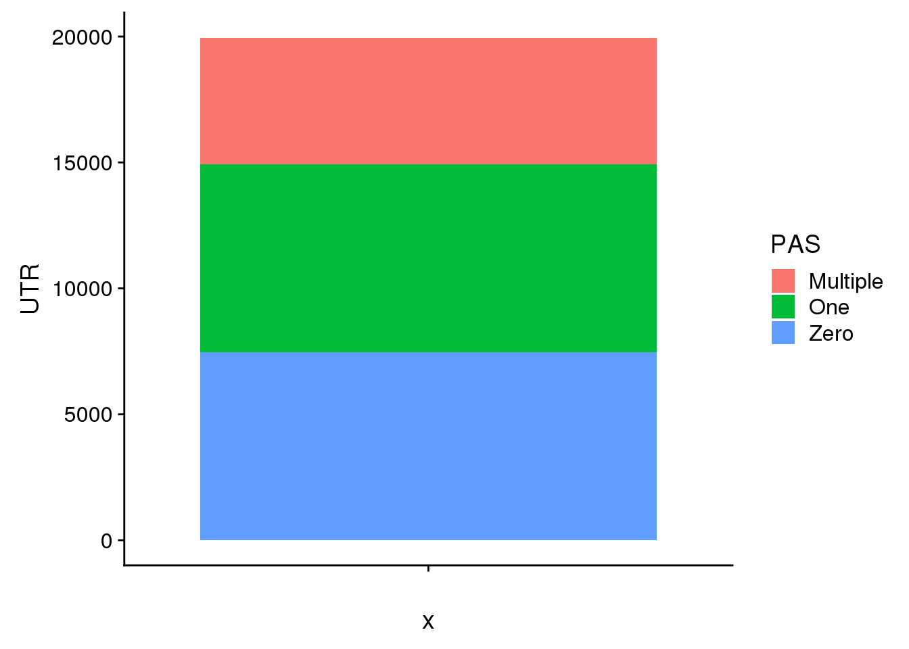
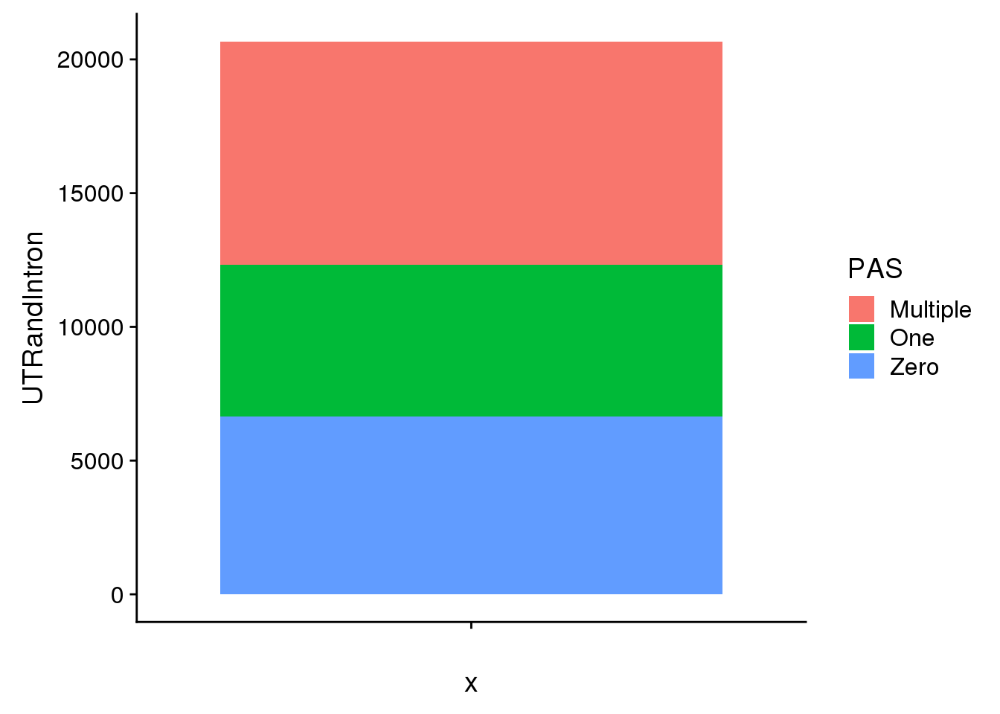
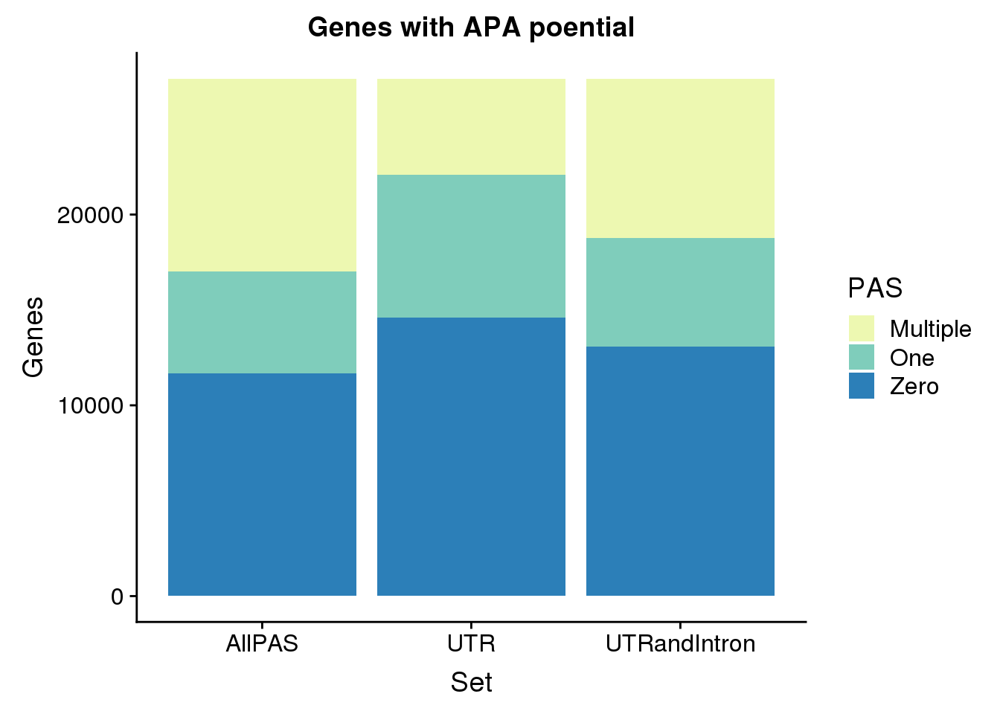
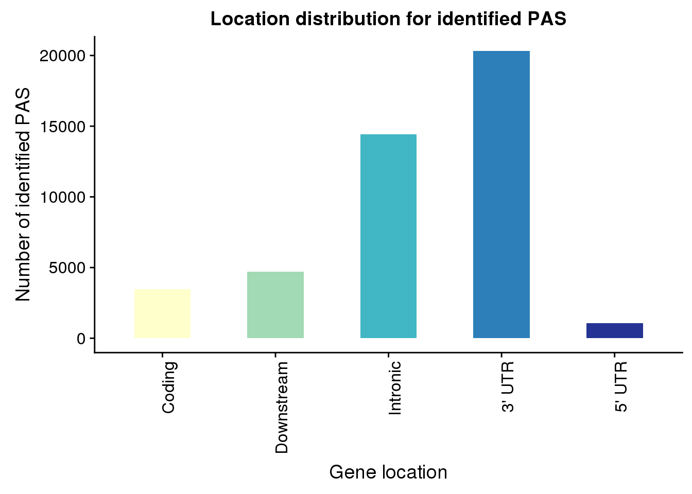
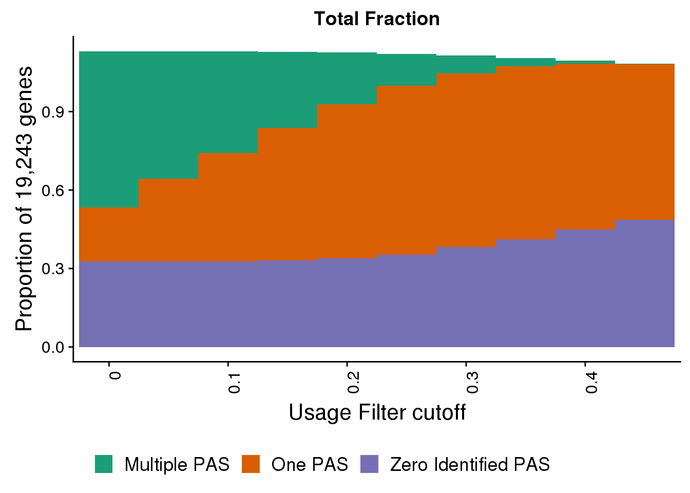
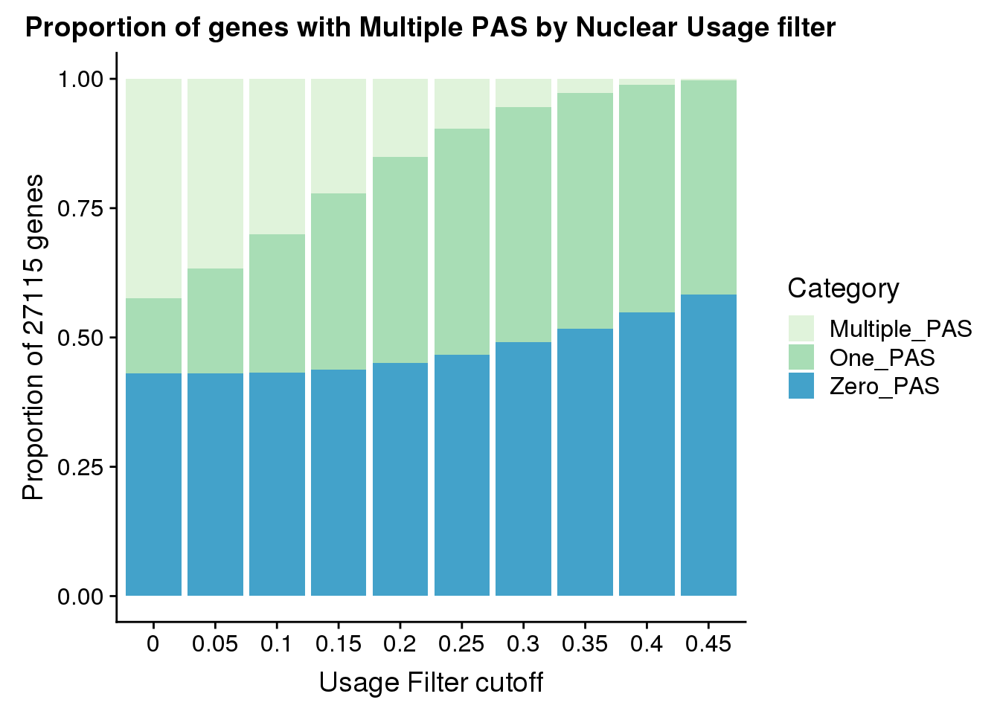
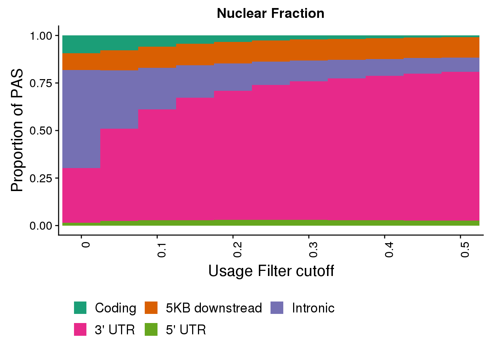
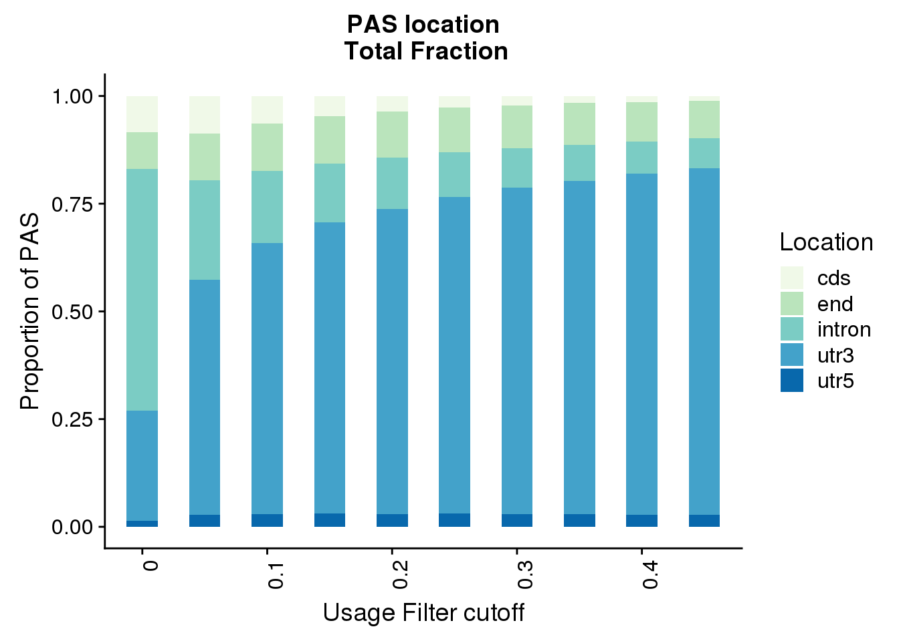

Last updated: 2019-06-13
Checks: 6 0
Knit directory: apaQTL/analysis/
This reproducible R Markdown analysis was created with workflowr (version 1.3.0). The Checks tab describes the reproducibility checks that were applied when the results were created. The Past versions tab lists the development history.
Great! Since the R Markdown file has been committed to the Git repository, you know the exact version of the code that produced these results.
Great job! The global environment was empty. Objects defined in the global environment can affect the analysis in your R Markdown file in unknown ways. For reproduciblity it’s best to always run the code in an empty environment.
The command set.seed(20190411) was run prior to running the code in the R Markdown file. Setting a seed ensures that any results that rely on randomness, e.g. subsampling or permutations, are reproducible.
Great job! Recording the operating system, R version, and package versions is critical for reproducibility.
Nice! There were no cached chunks for this analysis, so you can be confident that you successfully produced the results during this run.
Great! You are using Git for version control. Tracking code development and connecting the code version to the results is critical for reproducibility. The version displayed above was the version of the Git repository at the time these results were generated.
Note that you need to be careful to ensure that all relevant files for the analysis have been committed to Git prior to generating the results (you can use wflow_publish or wflow_git_commit). workflowr only checks the R Markdown file, but you know if there are other scripts or data files that it depends on. Below is the status of the Git repository when the results were generated:
Ignored files:
Ignored: .DS_Store
Ignored: .Rhistory
Ignored: .Rproj.user/
Ignored: analysis/figure/
Ignored: output/.DS_Store
Untracked files:
Untracked: .Rprofile
Untracked: ._.DS_Store
Untracked: .gitignore
Untracked: _workflowr.yml
Untracked: analysis/._PASdescriptiveplots.Rmd
Untracked: analysis/._cuttoffPercUsage.Rmd
Untracked: analysis/QTLexampleplots.Rmd
Untracked: analysis/cuttoffPercUsage.Rmd
Untracked: analysis/eQTLoverlap.Rmd
Untracked: analysis/oldstuffNotNeeded.Rmd
Untracked: apaQTL.Rproj
Untracked: code/.NascentRNAdtPlotFirstintronicPAS.sh.swp
Untracked: code/._ApaQTL_nominalNonnorm.sh
Untracked: code/._BothFracDTPlotGeneRegions_normalized.sh
Untracked: code/._FC_NucintornUpandDown.sh
Untracked: code/._FC_UTR.sh
Untracked: code/._FC_intornUpandDownsteamPAS.sh
Untracked: code/._FC_newPeaks_olddata.sh
Untracked: code/._HMMpermuteTotal.py
Untracked: code/._HmmPermute.py
Untracked: code/._LC_samplegroups.py
Untracked: code/._NascentRNAdtPlot.sh
Untracked: code/._NascentRNAdtPlot3UTRPAS.sh
Untracked: code/._NascentRNAdtPlotExcludeFirstintronicPAS.sh
Untracked: code/._NascentRNAdtPlotNucPAS.sh
Untracked: code/._NascentRNAdtPlotTotPAS.sh
Untracked: code/._NascentRNAdtPlotintronicPAS.sh
Untracked: code/._NascnetRNAdtPlotPAS.sh
Untracked: code/._NetSeq_fourthintronDT.sh
Untracked: code/._QTL2bed.py
Untracked: code/._QTL2bed_withstrand.py
Untracked: code/._SnakefilePAS
Untracked: code/._SnakefilefiltPAS
Untracked: code/._TESplots100bp.sh
Untracked: code/._TESplots150bp.sh
Untracked: code/._TESplots200bp.sh
Untracked: code/._Untitled
Untracked: code/._ZipandTabPheno.sh
Untracked: code/._aAPAqtl_nominal39ind.sh
Untracked: code/._apaQTLCorrectPvalMakeQQ.R
Untracked: code/._apaQTL_Nominal.sh
Untracked: code/._apaQTL_permuted.sh
Untracked: code/._assignNucIntonpeak2intronlocs.sh
Untracked: code/._assignTotIntronpeak2intronlocs.sh
Untracked: code/._bam2BW_5primemost.sh
Untracked: code/._bed2saf.py
Untracked: code/._bothFracDTplot1stintron.sh
Untracked: code/._bothFracDTplot4thintron.sh
Untracked: code/._bothFrac_FC.sh
Untracked: code/._callPeaksYL.py
Untracked: code/._chooseAnno2SAF.py
Untracked: code/._chooseSignalSite
Untracked: code/._chooseSignalSite.py
Untracked: code/._cluster.json
Untracked: code/._clusterPAS.json
Untracked: code/._clusterfiltPAS.json
Untracked: code/._codingdms2bed.py
Untracked: code/._config.yaml
Untracked: code/._config2.yaml
Untracked: code/._configOLD.yaml
Untracked: code/._convertNominal2SNPLOC.py
Untracked: code/._convertNumeric.py
Untracked: code/._correctNomeqtl.R
Untracked: code/._dag.pdf
Untracked: code/._eQTLgenestestedapa.py
Untracked: code/._encodeRNADTplots.sh
Untracked: code/._extractGenotypes.py
Untracked: code/._extractseqfromqtlfastq.py
Untracked: code/._fc2leafphen.py
Untracked: code/._filter5perc.R
Untracked: code/._filter5percPheno.py
Untracked: code/._filterpeaks.py
Untracked: code/._finalPASbed2SAF.py
Untracked: code/._fix4su304corr.py
Untracked: code/._fix4su604corr.py
Untracked: code/._fix4sukalisto.py
Untracked: code/._fixExandUnexeQTL
Untracked: code/._fixExandUnexeQTL.py
Untracked: code/._fixFChead.py
Untracked: code/._fixFChead_bothfrac.py
Untracked: code/._fixH3k12ac.py
Untracked: code/._fixRNAhead4corr.py
Untracked: code/._fixRNAkalisto.py
Untracked: code/._fixgroupedtranscript.py
Untracked: code/._fixhead_netseqfc.py
Untracked: code/._getAPAfromanyeQTL.py
Untracked: code/._getApapval4eqtl.py
Untracked: code/._getApapval4eqtl_unexp.py
Untracked: code/._getDownstreamIntronNuclear.py
Untracked: code/._getIntronDownstreamPAS.py
Untracked: code/._getIntronUpstreamPAS.py
Untracked: code/._getQTLalleles.py
Untracked: code/._getQTLfastq.sh
Untracked: code/._getUpstreamIntronNuclear.py
Untracked: code/._grouptranscripts.py
Untracked: code/._keep5perMAF.py
Untracked: code/._keepSNP_vcf.sh
Untracked: code/._make5percPeakbed.py
Untracked: code/._makeFileID.py
Untracked: code/._makePheno.py
Untracked: code/._makeSAFbothfrac5perc.py
Untracked: code/._makeSNP2rsidfile.py
Untracked: code/._makeeQTLempirical_unexp.py
Untracked: code/._makeeQTLempiricaldist.py
Untracked: code/._makegencondeTSSfile.py
Untracked: code/._mergeAllBam.sh
Untracked: code/._mergeBW_norm.sh
Untracked: code/._mergeBamNascent.sh
Untracked: code/._mergeByFracBam.sh
Untracked: code/._mergePeaks.sh
Untracked: code/._mnase1stintron.sh
Untracked: code/._mnaseDT_fourthintron.sh
Untracked: code/._namePeaks.py
Untracked: code/._netseqDTplot1stIntron.sh
Untracked: code/._netseqFC.sh
Untracked: code/._peak2PAS.py
Untracked: code/._peakFC.sh
Untracked: code/._pheno2countonly.R
Untracked: code/._processYRIgen.py
Untracked: code/._qtlRegionseq.sh
Untracked: code/._qtlsPvalOppFrac.py
Untracked: code/._quantassign2parsedpeak.py
Untracked: code/._removeXfromHmm.py
Untracked: code/._removeloc_pheno.py
Untracked: code/._runCorrectNomEqtl.sh
Untracked: code/._runHMMpermuteAPAqtls.sh
Untracked: code/._runHMMpermuteeQTLS.sh
Untracked: code/._runMakeEmpiricaleQTL_unexp.sh
Untracked: code/._runMakeeQTLempirical.sh
Untracked: code/._run_getApaPval4eqtl.sh
Untracked: code/._run_getapafromeQTL.py
Untracked: code/._run_getapafromeQTL.sh
Untracked: code/._run_getapapval4eqtl_unexp.sh
Untracked: code/._run_leafcutterDiffIso.sh
Untracked: code/._run_sepUsagephen.sh
Untracked: code/._run_sepgenobychrom.sh
Untracked: code/._selectNominalPvalues.py
Untracked: code/._sepUsagePhen.py
Untracked: code/._sepgenobychrom.py
Untracked: code/._snakemakePAS.batch
Untracked: code/._snakemakefiltPAS.batch
Untracked: code/._submit-snakemakePAS.sh
Untracked: code/._submit-snakemakefiltPAS.sh
Untracked: code/._subsetApanoteGene.py
Untracked: code/._subsetUnexplainedeQTLs.py
Untracked: code/._subset_diffisopheno.py
Untracked: code/._subsetpermAPAwithGenelist.py
Untracked: code/._subtrachfiveprimeUTR.sh
Untracked: code/._subtractExons.sh
Untracked: code/._subtractfiveprimeUTR.sh
Untracked: code/._tabixSNPS.sh
Untracked: code/._utrdms2saf.py
Untracked: code/.snakemake/
Untracked: code/APAqtl_nominal.err
Untracked: code/APAqtl_nominal.out
Untracked: code/APAqtl_nominal_39.err
Untracked: code/APAqtl_nominal_39.out
Untracked: code/APAqtl_nominal_nonNorm.err
Untracked: code/APAqtl_nominal_nonNorm.out
Untracked: code/APAqtl_permuted.err
Untracked: code/APAqtl_permuted.out
Untracked: code/ApaQTL_nominalNonnorm.sh
Untracked: code/BothFracDTPlot1stintron.err
Untracked: code/BothFracDTPlot1stintron.out
Untracked: code/BothFracDTPlot4stintron.err
Untracked: code/BothFracDTPlot4stintron.out
Untracked: code/BothFracDTPlotGeneRegions.err
Untracked: code/BothFracDTPlotGeneRegions.out
Untracked: code/BothFracDTPlotGeneRegions_norm.err
Untracked: code/BothFracDTPlotGeneRegions_norm.out
Untracked: code/BothFracDTPlotGeneRegions_normalized.sh
Untracked: code/DistPAS2Sig.py
Untracked: code/EncodeRNADTPlotGeneRegions.err
Untracked: code/EncodeRNADTPlotGeneRegions.out
Untracked: code/FC_NucintornUpandDown.sh
Untracked: code/FC_NucintronPASupandDown.err
Untracked: code/FC_NucintronPASupandDown.out
Untracked: code/FC_UTR.err
Untracked: code/FC_UTR.out
Untracked: code/FC_UTR.sh
Untracked: code/FC_intornUpandDownsteamPAS.sh
Untracked: code/FC_intronPASupandDown.err
Untracked: code/FC_intronPASupandDown.out
Untracked: code/FC_newPAS_olddata.err
Untracked: code/FC_newPAS_olddata.out
Untracked: code/FC_newPeaks_olddata.sh
Untracked: code/HMMpermuteTotal.py
Untracked: code/HmmPermute.p
Untracked: code/HmmPermute.py
Untracked: code/LC_samplegroups.py
Untracked: code/NascentDTPlotGeneRegions.err
Untracked: code/NascentDTPlotGeneRegions.out
Untracked: code/NascentDTPlotPAS.err
Untracked: code/NascentDTPlotPAS.out
Untracked: code/NascentDTPlotPAS_3utr.err
Untracked: code/NascentDTPlotPAS_3utr.out
Untracked: code/NascentDTPlotPAS_firstintron.err
Untracked: code/NascentDTPlotPAS_firstintron.out
Untracked: code/NascentDTPlotPAS_intron.err
Untracked: code/NascentDTPlotPAS_intron.out
Untracked: code/NascentDTPlotPAS_nuc.err
Untracked: code/NascentDTPlotPAS_nuc.out
Untracked: code/NascentDTPlotPAS_tot.err
Untracked: code/NascentDTPlotPAS_tot.out
Untracked: code/NascentRNAdtPlot.sh
Untracked: code/NascentRNAdtPlot3UTRPAS.sh
Untracked: code/NascentRNAdtPlotExcludeFirstintronicPAS.sh
Untracked: code/NascentRNAdtPlotFirstintronicPAS.sh
Untracked: code/NascentRNAdtPlotNucPAS.sh
Untracked: code/NascentRNAdtPlotTotPAS.sh
Untracked: code/NascentRNAdtPlotintronicPAS.sh
Untracked: code/NascnetRNAdtPlotPAS.sh
Untracked: code/NetSeq_fourthintronDT.sh
Untracked: code/QTL2bed.py
Untracked: code/QTL2bed_withstrand.py
Untracked: code/README.md
Untracked: code/Rplots.pdf
Untracked: code/TESplots100bp.err
Untracked: code/TESplots100bp.out
Untracked: code/TESplots100bp.sh
Untracked: code/TESplots150bp.err
Untracked: code/TESplots150bp.out
Untracked: code/TESplots150bp.sh
Untracked: code/TESplots200bp.err
Untracked: code/TESplots200bp.out
Untracked: code/TESplots200bp.sh
Untracked: code/Untitled
Untracked: code/Upstream100Bases_general.py
Untracked: code/ZipandTabPheno.sh
Untracked: code/aAPAqtl_nominal39ind.sh
Untracked: code/apaQTLCorrectPvalMakeQQ_4pc.R
Untracked: code/apaQTL_Nominal_4pc.sh
Untracked: code/apaQTL_permuted.4pc.sh
Untracked: code/apafacetboxplots.R
Untracked: code/apaqtlfacetboxplots.R
Untracked: code/assignNucIntonpeak2intronlocs.sh
Untracked: code/assignPeak2Intronicregion.err
Untracked: code/assignPeak2Intronicregion.out
Untracked: code/assignTotIntronpeak2intronlocs.sh
Untracked: code/assigntotPeak2Intronicregion.err
Untracked: code/assigntotPeak2Intronicregion.out
Untracked: code/bam2BW_5primemost.sh
Untracked: code/bam2bw.err
Untracked: code/bam2bw.out
Untracked: code/bam2bw_5primemost.err
Untracked: code/bam2bw_5primemost.out
Untracked: code/bothFracDTplot1stintron.sh
Untracked: code/bothFracDTplot4thintron.sh
Untracked: code/bothFrac_FC.err
Untracked: code/bothFrac_FC.out
Untracked: code/bothFrac_FC.sh
Untracked: code/codingdms2bed.py
Untracked: code/convertNominal2SNPLOC.py
Untracked: code/correctNomeqtl.R
Untracked: code/dag.pdf
Untracked: code/dagPAS.pdf
Untracked: code/dagfiltPAS.pdf
Untracked: code/eQTLgenestestedapa.py
Untracked: code/encodeRNADTplots.sh
Untracked: code/extractGenotypes.py
Untracked: code/extractseqfromqtlfastq.py
Untracked: code/fc2leafphen.py
Untracked: code/finalPASbed2SAF.py
Untracked: code/findbuginpeaks.R
Untracked: code/fix4su304corr.py
Untracked: code/fix4su604corr.py
Untracked: code/fix4sukalisto.py
Untracked: code/fixExandUnexeQTL
Untracked: code/fixExandUnexeQTL.py
Untracked: code/fixFChead_bothfrac.py
Untracked: code/fixFChead_summary.py
Untracked: code/fixH3k12ac.py
Untracked: code/fixRNAhead4corr.py
Untracked: code/fixRNAkalisto.py
Untracked: code/fixgroupedtranscript.py
Untracked: code/fixhead_netseqfc.py
Untracked: code/genotypesYRI.gen.proc.keep.vcf.log
Untracked: code/genotypesYRI.gen.proc.keep.vcf.recode.vcf
Untracked: code/get100upPAS.py
Untracked: code/getAPAfromanyeQTL.py
Untracked: code/getApapval4eqtl.py
Untracked: code/getApapval4eqtl_unexp.py
Untracked: code/getDownstreamIntronNuclear.py
Untracked: code/getIntronDownstreamPAS.py
Untracked: code/getIntronUpstreamPAS.py
Untracked: code/getQTLalleles.py
Untracked: code/getQTLfastq.sh
Untracked: code/getSeq100up.sh
Untracked: code/getUpstreamIntronNuclear.py
Untracked: code/getseq100up.err
Untracked: code/getseq100up.out
Untracked: code/grouptranscripts.err
Untracked: code/grouptranscripts.out
Untracked: code/grouptranscripts.py
Untracked: code/keep5perMAF.py
Untracked: code/keepSNP_vcf.sh
Untracked: code/log/
Untracked: code/makeSAFbothfrac5perc.py
Untracked: code/makeSNP2rsidfile.py
Untracked: code/makeeQTLempirical_unexp.py
Untracked: code/makeeQTLempiricaldist.py
Untracked: code/makegencondeTSSfile.py
Untracked: code/mergeBW_norm.sh
Untracked: code/mergeBWnorm.err
Untracked: code/mergeBWnorm.out
Untracked: code/mergeBamNacent.err
Untracked: code/mergeBamNacent.out
Untracked: code/mergeBamNascent.sh
Untracked: code/mnase1stintron.sh
Untracked: code/mnaseDTPlot1stintron.err
Untracked: code/mnaseDTPlot1stintron.out
Untracked: code/mnaseDTPlot4thintron.err
Untracked: code/mnaseDTPlot4thintron.out
Untracked: code/mnaseDT_fourthintron.sh
Untracked: code/netDTPlot4thintron.out
Untracked: code/netseqDTplot1stIntron.sh
Untracked: code/netseqFC.err
Untracked: code/netseqFC.out
Untracked: code/netseqFC.sh
Untracked: code/neyDTPlot4thintron.err
Untracked: code/processYRIgen.py
Untracked: code/qtlFacetBoxplots.err
Untracked: code/qtlFacetBoxplots.out
Untracked: code/qtlRegionseq.sh
Untracked: code/qtlsPvalOppFrac.py
Untracked: code/removeXfromHmm.py
Untracked: code/removeloc_pheno.py
Untracked: code/runCorrectNomEqtl.sh
Untracked: code/runCorrectNomeqtl.err
Untracked: code/runCorrectNomeqtl.out
Untracked: code/runHMMpermute.err
Untracked: code/runHMMpermute.out
Untracked: code/runHMMpermuteAPAqtls.sh
Untracked: code/runHMMpermuteeQTLS.sh
Untracked: code/runHMMpermuteeQTLs.err
Untracked: code/runHMMpermuteeQTLs.out
Untracked: code/runMakeEmpiricaleQTL_unexp.sh
Untracked: code/runMakeEmpiricaleQTLs.err
Untracked: code/runMakeEmpiricaleQTLs.out
Untracked: code/runMakeEmpiricaleQTLsunex.err
Untracked: code/runMakeEmpiricaleQTLsunex.out
Untracked: code/runMakeeQTLempirical.sh
Untracked: code/run_DistPAS2Sig.err
Untracked: code/run_DistPAS2Sig.out
Untracked: code/run_distPAS2Sig.sh
Untracked: code/run_getAPAfromanyeQTL.err
Untracked: code/run_getAPAfromanyeQTL.out
Untracked: code/run_getApaPval4eQTLs.err
Untracked: code/run_getApaPval4eQTLs.out
Untracked: code/run_getApaPval4eQTLsunexplained.err
Untracked: code/run_getApaPval4eQTLsunexplained.out
Untracked: code/run_getApaPval4eqtl.sh
Untracked: code/run_getapafromeQTL.sh
Untracked: code/run_getapapval4eqtl_unexp.sh
Untracked: code/run_leafcutterDiffIso.sh
Untracked: code/run_leafcutter_ds.err
Untracked: code/run_leafcutter_ds.out
Untracked: code/run_qtlFacetBoxplots.sh
Untracked: code/run_sepUsagephen.sh
Untracked: code/run_sepgenobychrom.err
Untracked: code/run_sepgenobychrom.out
Untracked: code/run_sepgenobychrom.sh
Untracked: code/run_sepusage.err
Untracked: code/run_sepusage.out
Untracked: code/selectNominalPvalues.py
Untracked: code/sepUsagePhen.py
Untracked: code/sepgenobychrom.py
Untracked: code/seqQTLfastq.err
Untracked: code/seqQTLfastq.out
Untracked: code/seqQTLregion.err
Untracked: code/seqQTLregion.out
Untracked: code/snakePASlog.out
Untracked: code/snakefiltPASlog.out
Untracked: code/subsetApanoteGene.py
Untracked: code/subsetUnexplainedeQTLs.py
Untracked: code/subset_diffisopheno.py
Untracked: code/subsetpermAPAwithGenelist.py
Untracked: code/subtract5UTR.err
Untracked: code/subtract5UTR.out
Untracked: code/subtractExons.err
Untracked: code/subtractExons.out
Untracked: code/subtractExons.sh
Untracked: code/subtractfiveprimeUTR.sh
Untracked: code/tabixSNPS.sh
Untracked: code/tabixSNPs.err
Untracked: code/tabixSNPs.out
Untracked: code/transcriptdm2bed.py
Untracked: code/utrdms2saf.py
Untracked: code/vcf_keepsnps.err
Untracked: code/vcf_keepsnps.out
Untracked: code/zipandtabPhen.err
Untracked: code/zipandtabPhen.out
Untracked: data/ApaByEgene/
Untracked: data/CompareOldandNew/
Untracked: data/DTmatrix/
Untracked: data/DiffIso/
Untracked: data/EncodeRNA/
Untracked: data/ExampleQTLPlots/
Untracked: data/GeuvadisRNA/
Untracked: data/HMMqtls/
Untracked: data/Li_eQTLs/
Untracked: data/NascentRNA/
Untracked: data/PAS/
Untracked: data/QTLGenotypes/
Untracked: data/QTLoverlap/
Untracked: data/QTLoverlap_nonNorm/
Untracked: data/README.md
Untracked: data/RNAseq/
Untracked: data/Reads2UTR/
Untracked: data/SignalSiteFiles/
Untracked: data/ThirtyNineIndQtl_nominal/
Untracked: data/apaQTLNominal/
Untracked: data/apaQTLNominal_4pc/
Untracked: data/apaQTLPermuted/
Untracked: data/apaQTLPermuted_4pc/
Untracked: data/apaQTLs/
Untracked: data/assignedPeaks/
Untracked: data/bam/
Untracked: data/bam_clean/
Untracked: data/bam_waspfilt/
Untracked: data/bed_10up/
Untracked: data/bed_clean/
Untracked: data/bed_clean_sort/
Untracked: data/bed_waspfilter/
Untracked: data/bedsort_waspfilter/
Untracked: data/bothFrac_FC/
Untracked: data/bw_norm/
Untracked: data/eQTLs/
Untracked: data/exampleQTLs/
Untracked: data/fastq/
Untracked: data/filterPeaks/
Untracked: data/fourSU/
Untracked: data/h3k27ac/
Untracked: data/highdiffsiggenes.txt
Untracked: data/inclusivePeaks/
Untracked: data/inclusivePeaks_FC/
Untracked: data/intronRNAratio/
Untracked: data/intron_analysis/
Untracked: data/mergedBG/
Untracked: data/mergedBW_byfrac/
Untracked: data/mergedBW_norm/
Untracked: data/mergedBam/
Untracked: data/mergedbyFracBam/
Untracked: data/motifdistrupt/
Untracked: data/netseq/
Untracked: data/nonNorm_pheno/
Untracked: data/nuc_10up/
Untracked: data/nuc_10upclean/
Untracked: data/overlapeQTL_try2/
Untracked: data/overlapeQTLs/
Untracked: data/peakCoverage/
Untracked: data/peaks_5perc/
Untracked: data/phenotype/
Untracked: data/phenotype_5perc/
Untracked: data/sigDiffGenes.txt
Untracked: data/sort/
Untracked: data/sort_clean/
Untracked: data/sort_waspfilter/
Untracked: nohup.out
Untracked: output/._.DS_Store
Untracked: output/._meanCorrelationPhenotypes.svg
Untracked: output/dtPlots/
Untracked: output/fastqc/
Untracked: output/meanCorrelationPhenotypes.svg
Unstaged changes:
Modified: analysis/DiffIsoAnalysis.Rmd
Modified: analysis/Readdistagainstfeatures.Rmd
Modified: analysis/choosePCs.Rmd
Modified: analysis/corrbetweenind.Rmd
Modified: analysis/index.Rmd
Modified: analysis/mapapaQTL.Rmd
Modified: analysis/motifDisruption.Rmd
Modified: analysis/nascenttranscription.Rmd
Modified: analysis/nucintronicanalysis.Rmd
Modified: analysis/overlapapaqtlsandeqtls.Rmd
Modified: analysis/rna_netseq_h3k12ac.Rmd
Modified: code/BothFracDTPlotGeneRegions.sh
Modified: code/Snakefile
Deleted: code/Upstream10Bases_general.py
Modified: code/apaQTLCorrectPvalMakeQQ.R
Modified: code/apaQTL_permuted.sh
Modified: code/apaQTLsnake.err
Modified: code/bam2bw.sh
Modified: code/bed2saf.py
Modified: code/cluster.json
Modified: code/clusterfiltPAS.json
Modified: code/config.yaml
Modified: code/environment.yaml
Modified: code/makePheno.py
Deleted: code/test.txt
Note that any generated files, e.g. HTML, png, CSS, etc., are not included in this status report because it is ok for generated content to have uncommitted changes.
These are the previous versions of the R Markdown and HTML files. If you’ve configured a remote Git repository (see ?wflow_git_remote), click on the hyperlinks in the table below to view them.
| File | Version | Author | Date | Message |
|---|---|---|---|---|
| Rmd | 02b669e | brimittleman | 2019-06-13 | fix big bug |
| html | 0dbb65b | brimittleman | 2019-05-22 | Build site. |
| Rmd | d3df9c3 | brimittleman | 2019-05-22 | fix plots |
| html | 6af55a2 | brimittleman | 2019-05-21 | Build site. |
| Rmd | 2fd13bb | brimittleman | 2019-05-21 | add location plots |
| html | a88eedf | brimittleman | 2019-05-20 | Build site. |
| html | ccebe33 | brimittleman | 2019-04-24 | Build site. |
| html | 74a1372 | brimittleman | 2019-04-24 | Build site. |
| html | 012892d | brimittleman | 2019-04-24 | Build site. |
| html | 1fb7086 | brimittleman | 2019-04-23 | Build site. |
In this analysis I will create discriptive plots for the PAS identified in the 54 LCLs.
library(workflowr)This is workflowr version 1.3.0
Run ?workflowr for help getting startedlibrary(tidyverse)── Attaching packages ─────────────────────────────────────────────────────────────────────────── tidyverse 1.2.1 ──✔ ggplot2 3.1.1 ✔ purrr 0.3.2
✔ tibble 2.1.1 ✔ dplyr 0.8.0.1
✔ tidyr 0.8.3 ✔ stringr 1.3.1
✔ readr 1.3.1 ✔ forcats 0.3.0 ── Conflicts ────────────────────────────────────────────────────────────────────────────── tidyverse_conflicts() ──
✖ dplyr::filter() masks stats::filter()
✖ dplyr::lag() masks stats::lag()library(reshape2)
Attaching package: 'reshape2'The following object is masked from 'package:tidyr':
smithslibrary(cowplot)
Attaching package: 'cowplot'The following object is masked from 'package:ggplot2':
ggsaveI want to plot how many genes have 0, 1, 2 and more than 2 PAS in the set. I need to join my PAS with the annotation to find out how many genes have 0 PAS.
pas=read.table("../data/PAS/APAPAS_GeneLocAnno.5perc.bed", header = F, stringsAsFactors = F, col.names = c("Chr", "start", "end", "PeakID", "score", "strand")) %>% separate(PeakID, into=c("peaknum", "geneAnno"), sep=":") %>% separate(geneAnno, into=c("Gene", "Loc"),sep="_")
pasbygene= pas %>% group_by(Gene) %>% summarise(PAS=n())
annotation=read.table("../../genome_anotation_data/RefSeq_annotations/ncbiRefSeq_FormatedallAnnotation.sort.bed", col.names = c("chr", "start", "end", "anno", "score", "strand")) %>% separate(anno, into=c("Loc", "Gene"),sep=":") %>% group_by(Gene) %>% summarise(annos=n()) %>% dplyr::select(Gene)
PASallgene=annotation %>% full_join(pasbygene, by="Gene") %>% replace_na(list(PAS=0))
#group with 0,1,2,more than 2
PASallgene_grouped=PASallgene %>% mutate(Zero=ifelse(PAS==0,1, 0), One=ifelse(PAS==1,1,0), Multiple=ifelse(PAS>1,1,0))Plot this:
Genes=c(sum(PASallgene_grouped$Zero),sum(PASallgene_grouped$One),sum(PASallgene_grouped$Multiple))
PAS=c("Zero", "One", "Multiple")
AllPAS=c(sum(PASallgene_grouped$Zero),sum(PASallgene_grouped$One),sum(PASallgene_grouped$Multiple))
GenebyPAS=as.data.frame(cbind(PAS,AllPAS))
GenebyPAS$AllPAS=as.numeric(as.character(GenebyPAS$AllPAS))
allPASplot=ggplot(GenebyPAS, aes(x="",y=AllPAS, fill=PAS)) + geom_bar(stat="identity", width=.5) + scale_fill_brewer(palette="GnBu") + labs(title="Identified PAS per Gene", y="Genes",x="All Indentified PAS")
allPASplot
ggsave(allPASplot, file="../output/GeneswithAPApotentialAllPAS.png", width=3, height=5)pasUTR=pas %>% filter(Loc=="utr3") %>% group_by(Gene) %>% summarise(PAS=n())
pasUTR_allgene=annotation %>% full_join(pasUTR, by="Gene") %>% replace_na(list(PAS=0))
PASUTRallgene_grouped=pasUTR_allgene %>% mutate(Zero=ifelse(PAS==0,1, 0), One=ifelse(PAS==1,1,0), Multiple=ifelse(PAS>1,1,0))
GenesUTR=c(sum(PASUTRallgene_grouped$Zero),sum(PASUTRallgene_grouped$One),sum(PASUTRallgene_grouped$Multiple))
UTR=c(sum(PASUTRallgene_grouped$Zero),sum(PASUTRallgene_grouped$One),sum(PASUTRallgene_grouped$Multiple))
GenebyPASUTR=as.data.frame(cbind(PAS,UTR))
GenebyPASUTR$UTR=as.numeric(as.character(GenebyPASUTR$UTR))
ggplot(GenebyPASUTR, aes(x="",y=UTR, fill=PAS)) + geom_bar(stat="identity")
pasIntron=pas %>% filter(Loc=="intron" | Loc=='utr3') %>% group_by(Gene) %>% summarise(PAS=n())
pasIntron_allgene=annotation %>% full_join(pasIntron, by="Gene") %>% replace_na(list(PAS=0))
pasIntronallgene_grouped=pasIntron_allgene %>% mutate(Zero=ifelse(PAS==0,1, 0), One=ifelse(PAS==1,1,0), Multiple=ifelse(PAS>1,1,0))
UTRandIntron=c(sum(pasIntronallgene_grouped$Zero),sum(pasIntronallgene_grouped$One),sum(pasIntronallgene_grouped$Multiple))
GenebyPASIntron=as.data.frame(cbind(PAS,UTRandIntron))
GenebyPASIntron$UTRandIntron=as.numeric(as.character(GenebyPASIntron$UTRandIntron))
ggplot(GenebyPASIntron, aes(x="",y=UTRandIntron, fill=PAS)) + geom_bar(stat="identity")
Make these side by side:
GenebyPASUTR_melt=melt(GenebyPASUTR, id.vars = "PAS", value.name = "Genes", variable.name = "Set")
GenebyPAS_melt=melt(GenebyPAS, id.vars = "PAS", value.name = "Genes", variable.name = "Set")
GenebyPASIntron_melt=melt(GenebyPASIntron, id.vars = "PAS", value.name = "Genes", variable.name = "Set")
GenebyPAStoplot=rbind(GenebyPAS_melt,GenebyPASUTR_melt,GenebyPASIntron_melt)
geneswithAPA=ggplot(GenebyPAStoplot, aes(x=Set,y=Genes, fill=PAS, by=Set)) + geom_bar(stat="identity")+ scale_fill_brewer(palette="YlGnBu") + labs(title="Genes with APA poential")
geneswithAPA
ggsave(geneswithAPA, file="../output/GeneswithAPApotential.png")Saving 7 x 5 in imageGenebyPAStoplot PAS Set Genes
1 Zero AllPAS 11659
2 One AllPAS 5361
3 Multiple AllPAS 10095
4 Zero UTR 14594
5 One UTR 7479
6 Multiple UTR 5042
7 Zero UTRandIntron 13089
8 One UTRandIntron 5677
9 Multiple UTRandIntron 8349PAS_loc=pas %>% group_by(Loc) %>% summarise(nPAS=n())
loclabel=c("Coding", "Downstream", "Intronic", "3' UTR", "5' UTR")
PASLocPlot=ggplot(PAS_loc, aes(x=Loc, y=nPAS, fill=Loc)) + geom_bar(stat="identity",width=.5)+ scale_fill_brewer(palette = "YlGnBu") + labs(x="Gene location", y="Number of identified PAS", title="Location distribution for identified PAS") + theme(legend.position = "none")+ scale_x_discrete(labels= loclabel)+theme(axis.text.x = element_text(angle = 90, hjust = 1))
PASLocPlot
ggsave(PASLocPlot, file="../output/PASlocation.png")Saving 7 x 5 in imageI want to make a script that takes a cuttoff and tells me how many gens have 0,1, >1 PAS. This way I can put these together to make stacked barplots:
I can make the plot for total then again for nuclear.
The annotaiton is annotation:
totapaanno=read.table("../data/phenotype/APApeak_Phenotype_GeneLocAnno.Total.fc",header = T,stringsAsFactors = F)
indiv=colnames(totapaanno)[2:55]
totapanum=read.table("../data/phenotype/APApeak_Phenotype_GeneLocAnno.Total.CountsOnlyNumeric",header = F, col.names = indiv)
totapa_mean=rowMeans(totapanum)
totapaMeananno=as.data.frame(cbind(ID=totapaanno$chrom, meanUsage=totapa_mean))
totapaMeananno$meanUsage=as.numeric(as.character(totapaMeananno$meanUsage))
totapaMeananno$ID=as.character(totapaMeananno$ID)genesbycuttoff_tot=function(fraction){
totapaMeananno_filt=totapaMeananno %>% filter(meanUsage >=fraction) %>% separate(ID, into=c("chrom", "start","end", "peakID"),sep=":") %>% separate(peakID, into=c("Gene","loc", "strand", "peak"),sep="_") %>% group_by(Gene) %>% summarise(PAS=n())
PASallgene=annotation %>% full_join(totapaMeananno_filt, by="Gene") %>% replace_na(list(PAS=0))
PASallgene_cat=PASallgene %>% mutate(Category=ifelse(PAS==0,"Zero", ifelse(PAS==1, "One", "Multiple"))) %>% group_by(Category) %>% summarise(NPer=n())
return(PASallgene_cat$NPer)
}#multiple, one, zero
categories=c("Multiple_PAS", "One_PAS", "Zero_PAS")
FullDF=as.data.frame(cbind(categories))
cutoffs=seq(from=0, to=.5, by=.05)
for (val in cutoffs[1:10])
{
FullDF=cbind(FullDF,val=genesbycuttoff_tot(val))
}Warning: Expected 4 pieces. Additional pieces discarded in 4 rows [14735,
14736, 14737, 14738].Warning: Expected 4 pieces. Additional pieces discarded in 3 rows [4801,
4802, 4803].Warning: Expected 4 pieces. Additional pieces discarded in 3 rows [3549,
3550, 3551].Warning: Expected 4 pieces. Additional pieces discarded in 2 rows [2951,
2952].Warning: Expected 4 pieces. Additional pieces discarded in 2 rows [2573,
2574].Warning: Expected 4 pieces. Additional pieces discarded in 1 rows [2269].Warning: Expected 4 pieces. Additional pieces discarded in 1 rows [2024].Warning: Expected 4 pieces. Additional pieces discarded in 1 rows [1827].Warning: Expected 4 pieces. Additional pieces discarded in 1 rows [1651].Warning: Expected 4 pieces. Additional pieces discarded in 1 rows [1521].colnames(FullDF)=c("Category",cutoffs[1:10])Melt:
fullDF_melt=melt(FullDF,id.vars = "Category",variable.name = "Cutoff", value.name = "NGenes") %>% mutate(propGene=NGenes/nrow(annotation))
ggplot(fullDF_melt,aes(x=Cutoff, y=propGene, by=Category, fill=Category)) + geom_bar( stat="identity",width = .5) + scale_fill_brewer(palette="GnBu") + labs(title="Proportion of genes with Multiple PAS by Total Usage filter",y="Proportion of 27115 genes", x="Usage Filter cutoff") + theme(axis.text.x = element_text(angle = 90, hjust = 1)) + scale_x_discrete(name="Usage Filter cutoff", breaks=c("0","0.1","0.2", "0.3", "0.4","0.5"))
Nuclear:
nucapaanno=read.table("../data/phenotype/APApeak_Phenotype_GeneLocAnno.Nuclear.fc",header = T,stringsAsFactors = F)
nucapanum=read.table("../data/phenotype/APApeak_Phenotype_GeneLocAnno.Nuclear.CountsOnlyNumeric",header = F, col.names = indiv)
nucapa_mean=rowMeans(nucapanum)
nucapaMeananno=as.data.frame(cbind(ID=nucapaanno$chrom, meanUsage=nucapa_mean))
nucapaMeananno$meanUsage=as.numeric(as.character(nucapaMeananno$meanUsage))
nucapaMeananno$ID=as.character(nucapaMeananno$ID)genesbycuttoff_nuc=function(fraction){
nucapaMeananno_filt=nucapaMeananno %>% filter(meanUsage >=fraction) %>% separate(ID, into=c("chrom", "start","end", "peakID"),sep=":") %>% separate(peakID, into=c("Gene","loc", "strand", "peak"),sep="_") %>% group_by(Gene) %>% summarise(PAS=n())
PASallgene=annotation %>% full_join(nucapaMeananno_filt, by="Gene") %>% replace_na(list(PAS=0))
PASallgene_cat=PASallgene %>% mutate(Category=ifelse(PAS==0,"Zero", ifelse(PAS==1, "One", "Multiple"))) %>% group_by(Category) %>% summarise(NPer=n())
return(PASallgene_cat$NPer)
}#multiple, one, zero
FullDFNuc=as.data.frame(cbind(categories))
for (val in cutoffs[1:10])
{
FullDFNuc=cbind(FullDFNuc,val=genesbycuttoff_nuc(val))
}Warning: Expected 4 pieces. Additional pieces discarded in 4 rows [14735,
14736, 14737, 14738].Warning: Expected 4 pieces. Additional pieces discarded in 4 rows [5399,
5400, 5401, 5402].Warning: Expected 4 pieces. Additional pieces discarded in 3 rows [3814,
3815, 3816].Warning: Expected 4 pieces. Additional pieces discarded in 2 rows [3076,
3077].Warning: Expected 4 pieces. Additional pieces discarded in 2 rows [2630,
2631].Warning: Expected 4 pieces. Additional pieces discarded in 1 rows [2310].Warning: Expected 4 pieces. Additional pieces discarded in 1 rows [2053].Warning: Expected 4 pieces. Additional pieces discarded in 1 rows [1821].Warning: Expected 4 pieces. Additional pieces discarded in 1 rows [1645].Warning: Expected 4 pieces. Additional pieces discarded in 1 rows [1507].colnames(FullDFNuc)=c("Category",cutoffs[1:10])FullDFNuc_melt=melt(FullDFNuc,id.vars = "Category",variable.name = "Cutoff", value.name = "NGenes") %>% mutate(propGene=NGenes/nrow(annotation))
ggplot(FullDFNuc_melt,aes(x=Cutoff, y=propGene, by=Category, fill=Category)) + geom_bar( stat="identity") + scale_fill_brewer(palette="GnBu") + labs(title="Proportion of genes with Multiple PAS by Nuclear Usage filter",y="Proportion of 27115 genes", x="Usage Filter cutoff")
| Version | Author | Date |
|---|---|---|
| a88eedf | brimittleman | 2019-05-20 |
I will make these plots but the categories will be location of the PAS.
locbycutoff_tot=function(fraction){
totapaMeananno_filt=totapaMeananno %>% filter(meanUsage >=fraction) %>% separate(ID, into=c("chrom", "start","end", "peakID"),sep=":") %>% separate(peakID, into=c("Gene","loc", "strand", "peak"),sep="_") %>% group_by(loc) %>% summarise(PerLoc=n()) %>%filter(loc!= "008559")
return(totapaMeananno_filt$PerLoc)
}locations=c("cds", "end", "intron", "utr3", "utr5")
FullDF_loc=as.data.frame(cbind(locations))
cutoffs=seq(from=0, to=.5, by=.05)
for (val in cutoffs[1:10])
{
FullDF_loc=cbind(FullDF_loc,val=locbycutoff_tot(val))
}Warning: Expected 4 pieces. Additional pieces discarded in 4 rows [14735,
14736, 14737, 14738].Warning: Expected 4 pieces. Additional pieces discarded in 3 rows [4801,
4802, 4803].Warning: Expected 4 pieces. Additional pieces discarded in 3 rows [3549,
3550, 3551].Warning: Expected 4 pieces. Additional pieces discarded in 2 rows [2951,
2952].Warning: Expected 4 pieces. Additional pieces discarded in 2 rows [2573,
2574].Warning: Expected 4 pieces. Additional pieces discarded in 1 rows [2269].Warning: Expected 4 pieces. Additional pieces discarded in 1 rows [2024].Warning: Expected 4 pieces. Additional pieces discarded in 1 rows [1827].Warning: Expected 4 pieces. Additional pieces discarded in 1 rows [1651].Warning: Expected 4 pieces. Additional pieces discarded in 1 rows [1521].colnames(FullDF_loc)=c("Location",cutoffs[1:10])Melt:
FullDF_loc_melt=melt(FullDF_loc,id.vars = "Location",variable.name = "Cutoff", value.name = "NPas") %>% group_by(Cutoff) %>% mutate(propPAS=NPas/sum(NPas))
totplotloc=ggplot(FullDF_loc_melt,aes(x=Cutoff, y=propPAS, by=Location, fill=Location)) + geom_bar(width=.5, stat="identity") + scale_fill_brewer(palette="GnBu") + labs(title="PAS location\n Total Fraction",y="Proportion of PAS", x="Usage Filter cutoff")+ theme(axis.text.x = element_text(angle = 90, hjust = 1)) + scale_x_discrete(name="Usage Filter cutoff", breaks=c("0","0.1","0.2", "0.3", "0.4","0.5"))Nuclear
locbycutoff_nuc=function(fraction){
nucapaMeananno_filt=nucapaMeananno %>% filter(meanUsage >=fraction) %>% separate(ID, into=c("chrom", "start","end", "peakID"),sep=":") %>% separate(peakID, into=c("Gene","loc", "strand", "peak"),sep="_") %>% group_by(loc) %>% summarise(PerLoc=n()) %>%filter(loc!= "008559")
return(nucapaMeananno_filt$PerLoc)
}NucFullDF_loc=as.data.frame(cbind(locations))
cutoffs=seq(from=0, to=.5, by=.05)
for (val in cutoffs)
{
NucFullDF_loc=cbind(NucFullDF_loc,val=locbycutoff_nuc(val))
}Warning: Expected 4 pieces. Additional pieces discarded in 4 rows [14735,
14736, 14737, 14738].Warning: Expected 4 pieces. Additional pieces discarded in 4 rows [5399,
5400, 5401, 5402].Warning: Expected 4 pieces. Additional pieces discarded in 3 rows [3814,
3815, 3816].Warning: Expected 4 pieces. Additional pieces discarded in 2 rows [3076,
3077].Warning: Expected 4 pieces. Additional pieces discarded in 2 rows [2630,
2631].Warning: Expected 4 pieces. Additional pieces discarded in 1 rows [2310].Warning: Expected 4 pieces. Additional pieces discarded in 1 rows [2053].Warning: Expected 4 pieces. Additional pieces discarded in 1 rows [1821].Warning: Expected 4 pieces. Additional pieces discarded in 1 rows [1645].Warning: Expected 4 pieces. Additional pieces discarded in 1 rows [1507].Warning: Expected 4 pieces. Additional pieces discarded in 1 rows [1366].colnames(NucFullDF_loc)=c("Location",cutoffs)Melt:
NucFullDF_locMelt=melt(NucFullDF_loc,id.vars = "Location",variable.name = "Cutoff", value.name = "NPas") %>% group_by(Cutoff) %>% mutate(propPAS=NPas/sum(NPas))
nucplotloc=ggplot(NucFullDF_locMelt,aes(x=Cutoff, y=propPAS, by=Location, fill=Location)) + geom_bar(width = .5, stat="identity") + scale_fill_brewer(palette="GnBu") + labs(title="PAS location\n Nuclear Fraction",y="Proportion of PAS", x="Usage Filter cutoff")+ theme(axis.text.x = element_text(angle = 90, hjust = 1)) + scale_x_discrete(name="Usage Filter cutoff", breaks=c("0","0.1","0.2", "0.3", "0.4","0.5"))Plot next to eachother
plot_grid(nucplotloc, totplotloc)
totplotloc
| Version | Author | Date |
|---|---|---|
| 0dbb65b | brimittleman | 2019-05-22 |
sessionInfo()R version 3.5.1 (2018-07-02)
Platform: x86_64-pc-linux-gnu (64-bit)
Running under: Scientific Linux 7.4 (Nitrogen)
Matrix products: default
BLAS/LAPACK: /software/openblas-0.2.19-el7-x86_64/lib/libopenblas_haswellp-r0.2.19.so
locale:
[1] LC_CTYPE=en_US.UTF-8 LC_NUMERIC=C
[3] LC_TIME=en_US.UTF-8 LC_COLLATE=en_US.UTF-8
[5] LC_MONETARY=en_US.UTF-8 LC_MESSAGES=en_US.UTF-8
[7] LC_PAPER=en_US.UTF-8 LC_NAME=C
[9] LC_ADDRESS=C LC_TELEPHONE=C
[11] LC_MEASUREMENT=en_US.UTF-8 LC_IDENTIFICATION=C
attached base packages:
[1] stats graphics grDevices utils datasets methods base
other attached packages:
[1] cowplot_0.9.4 reshape2_1.4.3 forcats_0.3.0 stringr_1.3.1
[5] dplyr_0.8.0.1 purrr_0.3.2 readr_1.3.1 tidyr_0.8.3
[9] tibble_2.1.1 ggplot2_3.1.1 tidyverse_1.2.1 workflowr_1.3.0
loaded via a namespace (and not attached):
[1] Rcpp_1.0.0 RColorBrewer_1.1-2 cellranger_1.1.0
[4] pillar_1.3.1 compiler_3.5.1 git2r_0.25.2
[7] plyr_1.8.4 tools_3.5.1 digest_0.6.18
[10] lubridate_1.7.4 jsonlite_1.6 evaluate_0.12
[13] nlme_3.1-137 gtable_0.2.0 lattice_0.20-38
[16] pkgconfig_2.0.2 rlang_0.3.1 cli_1.0.1
[19] rstudioapi_0.10 yaml_2.2.0 haven_1.1.2
[22] withr_2.1.2 xml2_1.2.0 httr_1.3.1
[25] knitr_1.20 hms_0.4.2 generics_0.0.2
[28] fs_1.2.6 rprojroot_1.3-2 grid_3.5.1
[31] tidyselect_0.2.5 glue_1.3.0 R6_2.3.0
[34] readxl_1.1.0 rmarkdown_1.10 modelr_0.1.2
[37] magrittr_1.5 whisker_0.3-2 backports_1.1.2
[40] scales_1.0.0 htmltools_0.3.6 rvest_0.3.2
[43] assertthat_0.2.0 colorspace_1.3-2 labeling_0.3
[46] stringi_1.2.4 lazyeval_0.2.1 munsell_0.5.0
[49] broom_0.5.1 crayon_1.3.4